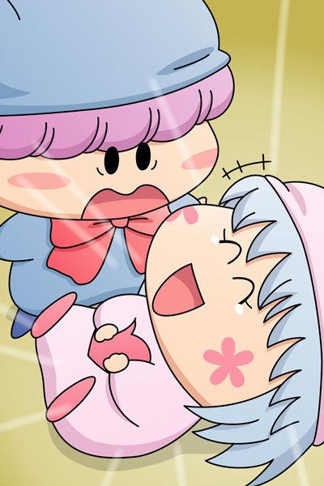

のんびりした時間はあっという間に過ぎ、早くもお昼ごはんの時間になりました。
真っ先に食卓に現れたのは…。
空腹に耐えきれないミルモと、一緒についてきたリルムの二人。
ミルモ「腹が減って目が回りそうだぜ～」
リルム「もうミルモ様ったら。
さっきあんなにみかんを食べたのにもうお腹が空いたんですの？」
ミルモ「胃袋はリルムの方が大きいじゃねーか」
リルム「ミルモ様、乙女に向かってそれはあんまりですわ！」
ミルモ「オレは本当のことを言ったまでだろ？
…ったくクモモのやつはどこ行ったんだ？
目の前にお菓子があるのに…オレはもう我慢できねーぞっ」
クモモ「皆さ～ん、お昼ごはんができましたクモよ！」
ミルモたちがお腹を空かせている頃、クモモはリビングへみんなを呼びに行っていました。
パンタ「は～い、ですっち」
ヤマネ「私もお腹が空きましたでございます」
サスケ＆ハンゾー「おいらもだぜ」「なのら～」
クモモ「ヤマネさんにはまた別のご飯を用意したクモ」
ヤマネ「クモモ殿はお料理も得意でうらやましいでございます」
アクミ「アロマ、お昼の後もまた折り紙を教えてくれよな」
アロマ「ええ、喜んで！」
アクミとアロマも一緒に食卓へ向かいました。
ムルモ「この話の続きはお昼ごはんの後でしゅよ」
パピィ「あたちの言うことの方が正しいってムルモに分からせてやるんだから！」
ムルモ「それはこっちのセリフでしゅ」
パピィ「あたちのセリフよ！！」
この二人も言い争いをしながら、ようやく食卓に現れました。
ヤマネのご飯が夕食の時と同じ席に用意されていたので、みんなの座る席も夕食の時とまったく同じになりました。
ヤシチが座っていた席が空席になっていることを除いては。
クモモ「それではお昼のいただきますはリルムさんにお願いするクモよ」
リルム「まぁ、光栄ですわ」
ミルモ「いいから早くしろっての」
リルム「それでは皆様、お願いしますわ」
みんな「いただきま～す！」
パンタ「今まで食べたことがないケーキですっち」
ミルモ「うひょーっ、やっぱクモモはお菓子作りのプロだな」
リルム「このコーヒーマシュマロも苦みがきいてて大人の味ですわね」
ヤマネ「サスケ先輩、コーヒーマシュマロはとっても美味しいのでございますか？」
サスケ「お・・・おうだぜ！
まだ半分残ってるから、ヤマネも半分だけなら…」
ハンゾー「だめなのら！後で兄貴に怒られるちゃうのら～！」
ヤマネ「兄様も早く起きてくださればいいのに・・・」
サスケ「兄貴ならきっと今頃お菓子を食べている夢でも見ている頃だぜ」
パピィ「・・・・・・」
ムルモ「！ どうしたんでしゅか？パピィ」
パピィ「食べないならあたちがいただくわ！」
パピィがムルモのお皿からコーヒーマシュマロを奪い取り、さっと口の中に放り込みました。
ムルモ「ほえぇぇ、最後に残しておいたコーヒーマシュマロなのに…。
パ～ピ～ィ～っ！」

パピィ「・・・きゃはははっ」
ムルモ「！？」
ここに来て第２の犠牲者登場です。パピィはいったいどうなってしまったのか？ それは次回描きますのでどうぞお楽しみに(^^)。
前日の夕食のシーンにて、食卓の席の配置図を載せ忘れていましたので、改めて載せてみます。この配置図が推理の参考になるかどうかは秘密としておきますね。

(2008/3/16)